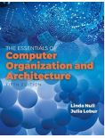
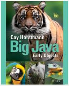
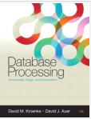

| Code | Image | Course title | Description | Level |
|---|---|---|---|---|
| CST8101Z |  | Computer Essentials | In this course you will learn the essentials of computer software, hardware, and laptop management | 1 |
| CST8116Z |  | Introduction to Computer Programming | Enter the fundamentals of logic, code and problem solving | 1 |
| CST8215Z |  | Introduction to Database | Fundamentals of relational database | 1 |
| CST8300Z | ima | Achieving Success in Changing Environments | Students explore the possibilities ahead, assess their own aptitudes and strengths, and apply critical thinking and decision-making tools | 1 |
| ENL1813Z | img | Communications I | Students will learn how to achieve the requirements of effective communication. | 1 |
| MAT8001Z | Technical Mathematics for Computer Science | The study of algebraic and transcendental functions is an essential prerequisite to Calculus. | 1 | |
| CST2355Z | img | Database Systems | Students acquire practical experience using market-leading object-relational database management systems like Oracle and MySQL. | 2 |